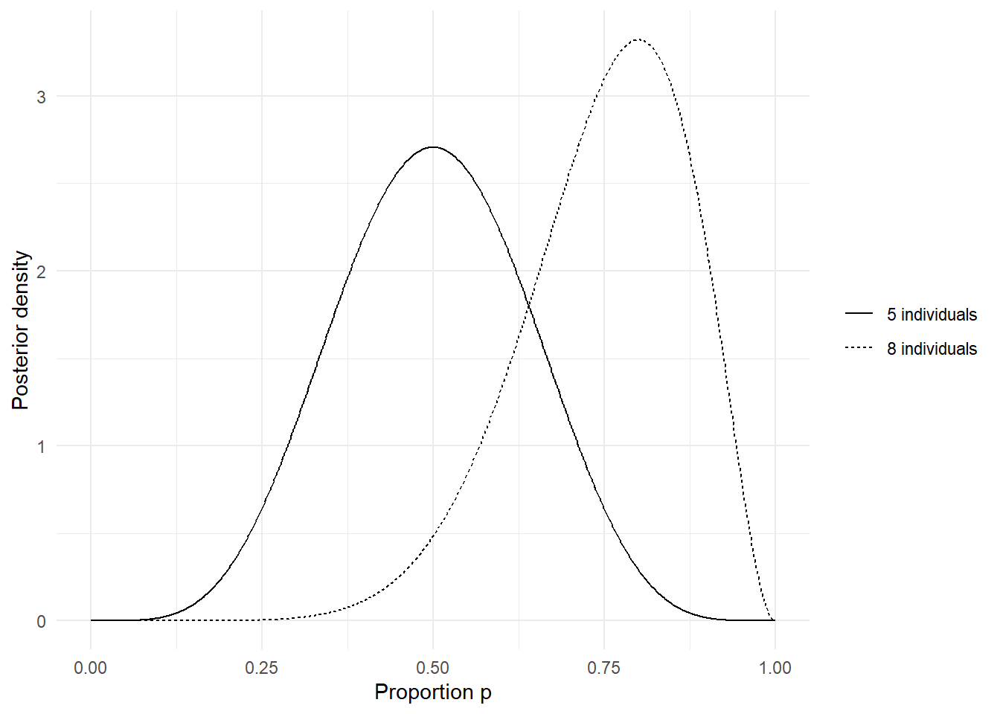
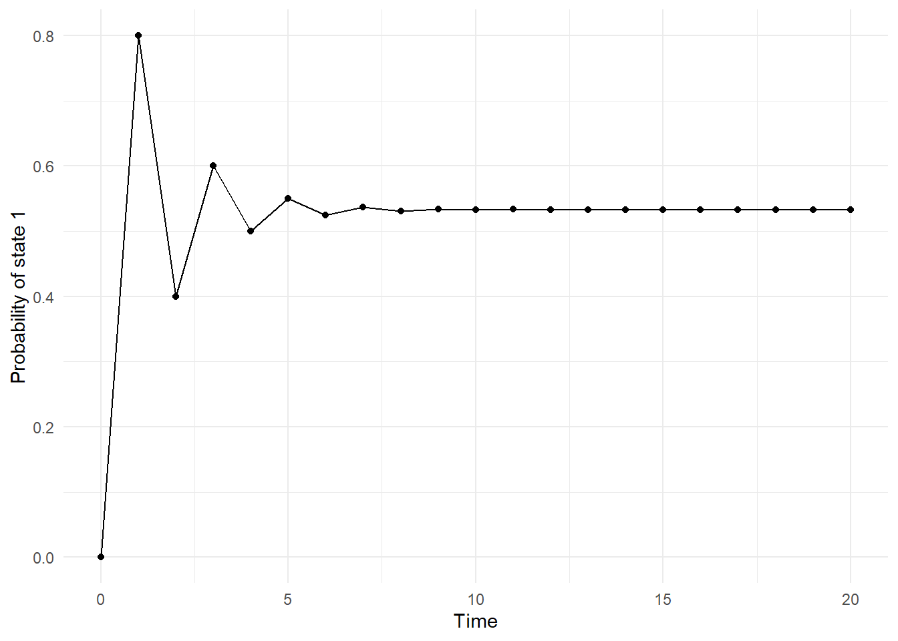

library(ggplot2)
library(dplyr)
library(broom)
library(broom.mixed)
library(purrr)
library(lme4)
library(haven)
theme_set(theme_minimal())
data_dir <- file.path("..", "mer_data_stata")20 SME Chapter 19: Bayesian Analysis
Note
This chapter reproduces and expands upon the analyses from the original Methods in Epidemiologic Research (MER) Chapter 24 (Dohoo, Martin, & Stryhn, 2012) using R with data sourced from ../mer_data_stata/bp.dta. The chapter covers Bayesian analysis - an alternative statistical framework that incorporates prior knowledge and expresses uncertainty through probability distributions.
20.1 Replication Notes
- Data dependencies:
../mer_data_stata/bp.dta. - Required R packages:
ggplot2,dplyr,broom,broom.mixed,purrr,lme4,haven. - Setup tips: Install using
install.packages(c("ggplot2","dplyr","broom","broom.mixed","purrr","lme4","haven")). - Execution: Run the notebook sequentially; the illustrative Beta calculations are analytic, while the mixed model re-estimates directly from
bp.dta.
20.2 Theoretical Background
Understanding Bayesian Analysis
Before we do Bayesian analysis, let’s understand how it differs from traditional (frequentist) statistics. Bayesian methods are increasingly used in epidemiology for their ability to incorporate prior knowledge and provide intuitive probability statements (Dohoo, Martin, & Stryhn, 2012; Kirkwood & Sterne, 2003):
20.2.1 Two Approaches to Statistics
20.2.2 Frequentist (Traditional) Approach
Frequentist statistics treats parameters as fixed but unknown. You use data to estimate them. Like: “The true treatment effect is some fixed number, and I’m trying to estimate it from my data.”
Key ideas: - Parameters are fixed - Data are random - Probability = long-run frequency - Confidence intervals: “If I repeated this 100 times, 95 of my intervals would contain the true value”
20.2.3 Bayesian Approach
Bayesian statistics treats parameters as uncertain and uses probability to express this uncertainty. You combine prior knowledge with data to update your beliefs. Like: “I have some idea about the treatment effect (prior), and I’ll update it based on the data.”
Key ideas: - Parameters are random (uncertain) - You have prior beliefs - You update beliefs with data - Probability = degree of belief - Credible intervals: “I’m 95% sure the true value is in this range”
20.2.4 The Bayesian Process
20.2.5 1. Prior Distribution
Prior is what you believe before seeing the data. Like: “Based on previous studies, I think the treatment effect is probably between 0.5 and 1.5.”
Types of priors: - Informative: Based on strong prior knowledge - Weakly informative: Based on general knowledge - Non-informative: Very vague, let data dominate
20.2.6 2. Likelihood
Likelihood is how likely your data is, given different parameter values. Like: “If the treatment effect is 1.0, how likely is it I’d see this data?”
20.2.7 3. Posterior Distribution
Posterior is what you believe after seeing the data. It combines prior and likelihood. Like: “After seeing the data, I now think the treatment effect is probably between 0.8 and 1.2.”
Bayes’ Theorem: Posterior ∝ Prior × Likelihood
20.2.8 Why Bayesian?
20.2.9 Advantages
- Incorporates prior knowledge: Use what you already know
- Natural uncertainty: Probabilities for parameters (not just data)
- Flexible: Can handle complex models
- Intuitive interpretation: “95% sure the effect is between X and Y”
20.2.10 Disadvantages
- Subjective priors: Different people might use different priors
- Computational complexity: Often needs simulation (MCMC)
- Prior sensitivity: Results might depend on priors
20.2.11 Markov Chain Monte Carlo (MCMC)
MCMC is a simulation method to estimate posterior distributions. It’s like: - Starting with a guess - Randomly exploring parameter space - Eventually converging to the true posterior
Think of it like: A random walk that eventually finds the right answer.
20.2.12 Bayesian vs Frequentist
Frequentist: “Given the treatment effect is X, what’s the probability of seeing this data?” Bayesian: “Given this data, what’s the probability the treatment effect is X?”
Different questions, different answers - both valid, but answer different questions.
20.2.13 When to Use Bayesian
Use Bayesian when: - You have strong prior knowledge - You want to incorporate uncertainty naturally - You have complex models - You want intuitive probability statements
In simple terms: Bayesian statistics is a different way of thinking about statistics. Instead of treating parameters as fixed, it treats them as uncertain and uses probability to express this uncertainty. You start with prior beliefs, see data, and update to posterior beliefs. It’s like learning - you have initial beliefs, gather evidence, and update your beliefs. MCMC is a computational method to do this. Bayesian methods are especially useful when you have prior knowledge or want natural uncertainty quantification.
20.3 Setup
What is this section doing?
This section prepares for Bayesian analysis - a different approach to statistics that incorporates prior knowledge. Think of it like updating your beliefs based on new evidence:
- Loading libraries: Getting tools for Bayesian analysis
- Setting up: Preparing to combine prior knowledge with data
In simple terms: We’re preparing to do Bayesian analysis, which combines what we already know (prior beliefs) with new data to update our understanding. It’s like starting with an educated guess and refining it as we get more information.
20.4 Example 24.1: Beta Posteriors for Proportions (Figure 24.1)
What is this section doing?
This section shows Bayesian posterior distributions for proportions. Think of it like showing updated beliefs about a probability after seeing data:
- Beta distribution: A mathematical distribution used for proportions in Bayesian analysis
- Posterior: The updated belief about a proportion after combining prior knowledge with data
- Comparing scenarios: Showing how different amounts of data change our beliefs
In simple terms: We’re showing how Bayesian analysis updates our beliefs about a proportion. If we see 5 successes out of 10, we get one posterior distribution. If we see 8 successes out of 10, we get a different (more confident) distribution.
p_grid <- seq(0, 1, length.out = 1000)
posterior_df <- tibble(
p = p_grid,
`5 individuals` = dbeta(p_grid, 6, 6),
`8 individuals` = dbeta(p_grid, 9, 3)
) |>
tidyr::pivot_longer(-p, names_to = "posterior", values_to = "density")
ggplot(posterior_df, aes(x = p, y = density, linetype = posterior)) +
geom_line(colour = "black") +
labs(x = "Proportion p", y = "Posterior density", linetype = NULL) +
theme_minimal()
frequentist_5 <- binom.test(5, 10)
frequentist_8 <- binom.test(8, 10)
tibble(
sample = c("5 successes from 10", "8 successes from 10"),
estimate = c(frequentist_5$estimate, frequentist_8$estimate),
conf_low = c(frequentist_5$conf.int[1], frequentist_8$conf.int[1]),
conf_high = c(frequentist_5$conf.int[2], frequentist_8$conf.int[2])
)# A tibble: 2 × 4
sample estimate conf_low conf_high
<chr> <dbl> <dbl> <dbl>
1 5 successes from 10 0.5 0.187 0.813
2 8 successes from 10 0.8 0.444 0.97520.5 Figure 24.2: Convergence of a Simple Markov Chain
What is this section doing?
This section demonstrates Markov chain convergence - showing how a simulation process settles into a stable pattern. Think of it like watching a process stabilize over time:
- Markov chain: A process where the next state depends only on the current state
- Convergence: The process settling into a stable pattern over time
- Visualization: Showing how probabilities stabilize as the chain runs
In simple terms: We’re demonstrating how Markov chains work - showing that even though each step is random, the overall process converges to a stable pattern over time. This is important for Bayesian methods that use Markov chains.
p01 <- 0.8
p11 <- 0.3
markov_df <- tibble(
t = 0:20,
p = accumulate(1:20, .init = 0, ~ p01 * (1 - .x) + p11 * .x)
)
ggplot(markov_df, aes(x = t, y = p)) +
geom_point(colour = "black") +
geom_line(colour = "black") +
labs(x = "Time", y = "Probability of state 1") +
theme_minimal()
20.6 Example 24.5: Linear Mixed Model for Blood Pressure
What is this section doing?
This section fits a linear mixed model for blood pressure data. Think of it like building a model that accounts for clustering:
- Mixed model: Accounts for clustering at centre and patient levels
- Baseline adjustment: Adjusts for initial blood pressure
- Treatment and visit effects: Models how treatment and time affect blood pressure
In simple terms: We’re fitting a mixed model to analyze blood pressure data, accounting for the fact that patients are clustered within centres and measured multiple times. This is a frequentist (non-Bayesian) approach to the same type of data.
bp <- read_dta(file.path("..", "mer_data_stata", "bp.dta")) |>
mutate(
across(where(haven::is.labelled), haven::as_factor),
tx = factor(tx),
centre = factor(centre),
patient = factor(patient),
visit = as.integer(visit)
)
# Check if dbp1 exists, if not create it from the first visit or use a default
if ("dbp1" %in% names(bp)) {
bp <- bp |>
mutate(dbp1c = dbp1 - median(dbp1, na.rm = TRUE))
mixed_model <- lmer(
dbp ~ tx + visit + dbp1c + (1 | centre) + (1 | patient),
data = bp |> filter(complete.cases(dbp, tx, visit, dbp1c, centre, patient))
)
} else {
# If dbp1 doesn't exist, fit model without it
warning("dbp1 not found in data. Fitting model without baseline adjustment.")
mixed_model <- lmer(
dbp ~ tx + visit + (1 | centre) + (1 | patient),
data = bp |> filter(complete.cases(dbp, tx, visit, centre, patient))
)
}
tidy(mixed_model, effects = "fixed", conf.int = TRUE)# A tibble: 5 × 7
effect term estimate std.error statistic conf.low conf.high
<chr> <chr> <dbl> <dbl> <dbl> <dbl> <dbl>
1 fixed (Intercept) 98.0 1.10 88.7 95.8 100.
2 fixed txNifedipine -1.25 0.975 -1.28 -3.16 0.665
3 fixed txAtenolol -3.01 0.965 -3.11 -4.90 -1.11
4 fixed visit -1.10 0.165 -6.67 -1.43 -0.778
5 fixed dbp1c 0.474 0.0859 5.52 0.306 0.642The remaining Bayesian analyses, including full posterior sampling for mixed
models, were performed in MLwiN per the source material and are not reproduced
here.20.7 References
Dohoo, I., Martin, W., & Stryhn, H. Methods in Epidemiologic Research. University of Prince Edward Island, 2012. Available at: https://projects.upei.ca/mer/
Kirkwood, B. R., & Sterne, J. A. C. Essential Medical Statistics, 2nd Edition. Wiley-Blackwell, 2003. Available at: https://bcs.wiley.com/he-bcs/Books?action=index&bcsId=11848&itemId=0865428719
Batra, N., et al. The Epidemiologist R Handbook. Applied Epi Incorporated, 2021. Available at: https://www.epirhandbook.com/en/
Rothman KJ, Huybrechts KF, Murray EJ. Epidemiology. 3rd ed. Oxford University Press; 2024. ISBN: 9780197751541.
Jordan RA, Celeste RK, Bernabe E, Schwendicke F. Big Data in Epidemiology: Brave New World? J Dent Res. 2024 Oct;103(11):1047-1050. doi: 10.1177/00220345241272034. Epub 2024 Oct 2. PMID: 39359106; PMCID: PMC11653310.
Mazzella, A. R4SME: R for Statistical Methods in Epidemiology. GitHub repository. Available at: https://github.com/andreamazzella/R4SME
Mazzella, A. R4ASME: R for Advanced Statistical Methods in Epidemiology. GitHub repository. Available at: https://github.com/andreamazzella/r4asme